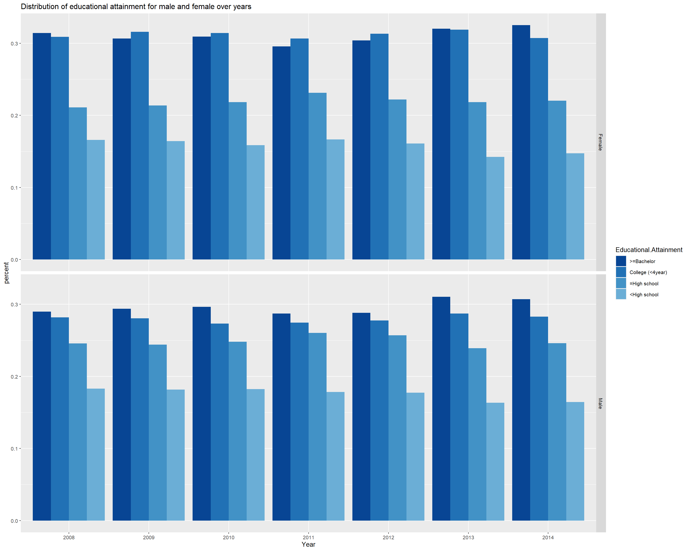
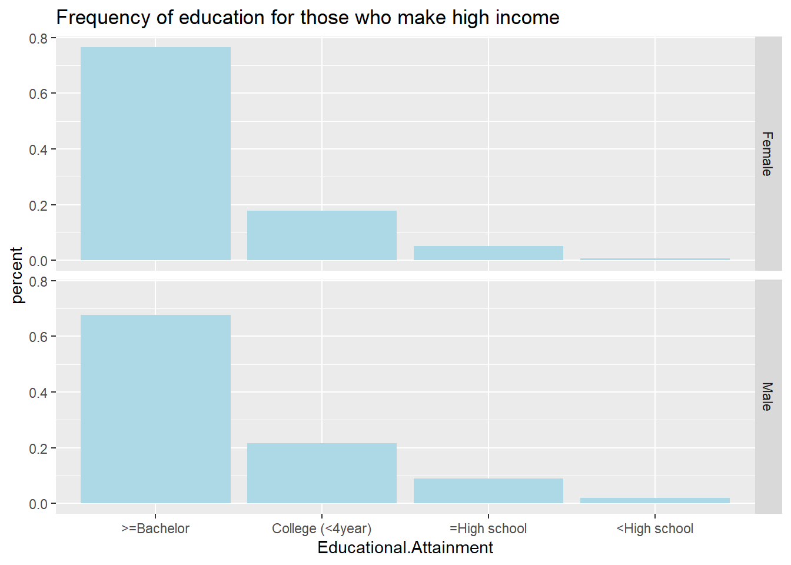
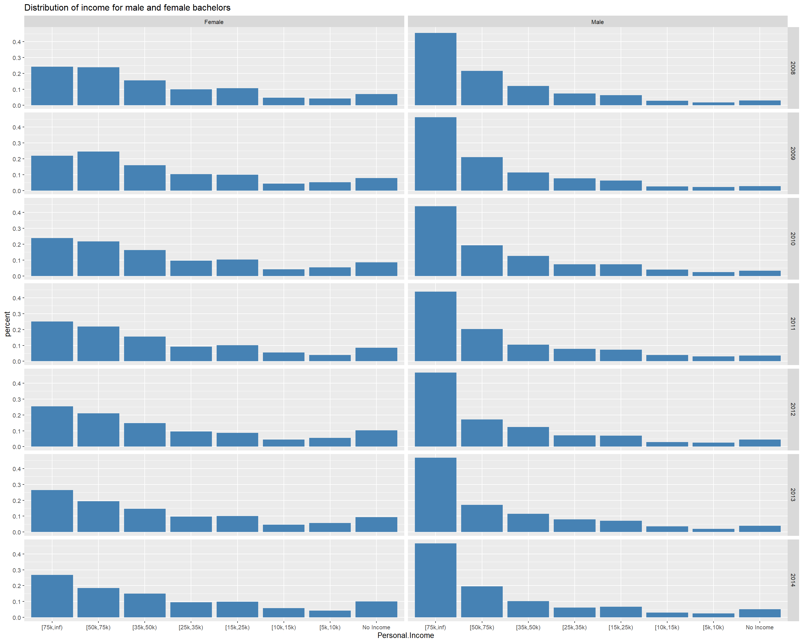
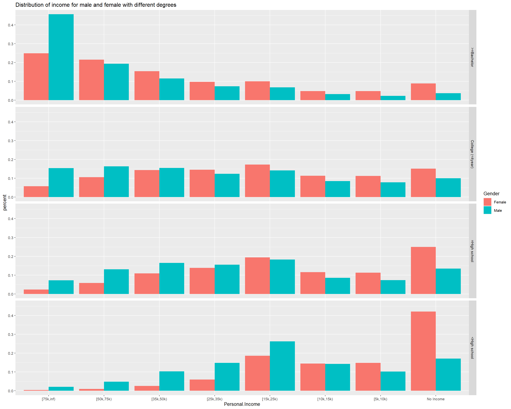
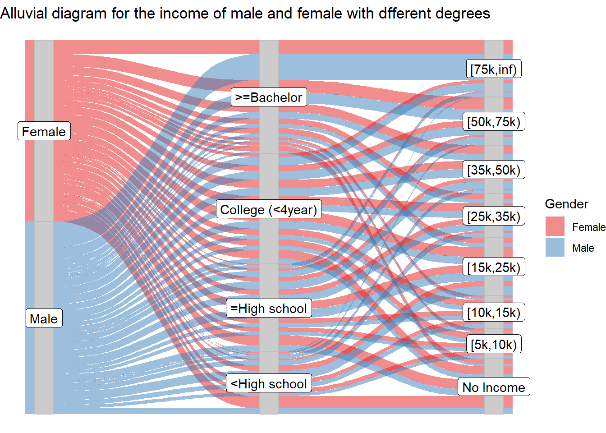

Chapter 5 Results
Firstly, does education have a big impact on people’s personal income?

There is very clear correlation between educational attainment and personal income: People with higher degree are more likely to make higher income.
Since education does make a positive impact on people’s personal income, are more people getting higher education nowadays? 
From our limited data, we can see that there was a slight decrease in the proportion of population that get a bachelor’s degree in 2011 and 2012, probably due to the financial hardship caused by the financial crisis in 2008. But the proportion soon got back and increased in 2013 and 2014.
It’s hard to make a conclusion with our limited data but we believe the proportion is increasing.
We then start to wonder if educational attainment is different for male and female: do females generally study more?
we can see that only slightly larger proportion of women got bachelor’s degree or more. More women got some college degree(less than 3 years),while more men got high school or equivalent.
Then we explored the proportion of male and female that make different income with a specific degree.
It is very clear that the proportion of high-incomers increases as degree advances. However, it is surprising to see such a huge gap between the proportion of male and female bachelors that make the highest income.
Then we filtered out the population that makes the highest income to see the distribution of their education.

it’s not surprising to see most of the high-income population hold a bachelor’s degree or more, while that proportion is slightly larger for females.
We are then interested in male and females that hold a bachelor’s degree. How much do male and female bachelors earn?

It is very clear that males with a bachelor’s degree are much much more likely to earn high income than their female counterparts!
Now we want to see this for different educational attainment:
 We found that this situation is not only true for bachelors. For every educational attainment, we can see much more males with the highest income and more females make no income.
We then also made alluvial diagram and stacked bar chart that give the same result:

We can see clearly that most of males that hold a bachelor’s degree or more earn high income, while most females who have less than high school degree make no income.